Вітальня · журнал «ДентАрт» 2018 №4
Професор Кетеван Гогілашвілі: «У стоматологічному світі сьогодні дуже велика конкуренція, але всі висоти досяжні!»
Інтерв'ю з професором Кетеван Гогілашвілі,Президент Асоціації грузинських стоматологів, завідувачка кафедри терапевтичної стоматології Тбіліського державного університету, засновник і клінічний керівник стоматологічного центру «Альбіус» (м. Тбілісі, Грузія). Розмовляла Ганна Антипович
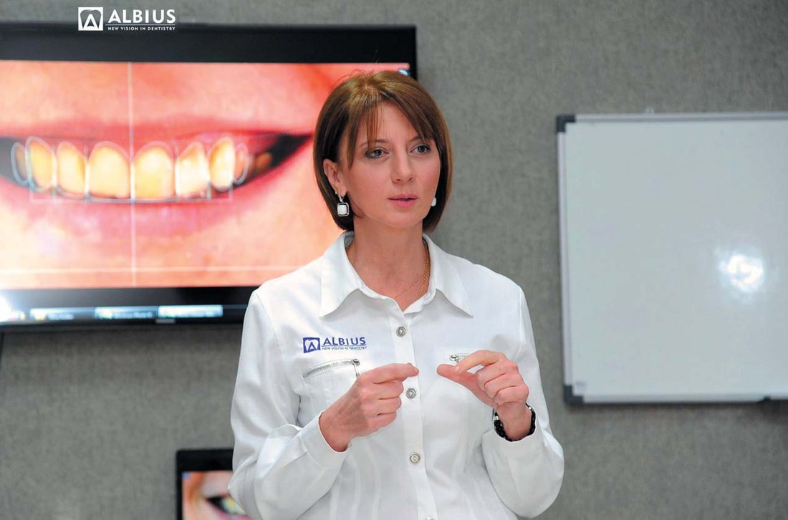
У Вітальні «ДентАрту» – стоматолог із Грузії Кетеван Гогілашвілі, багатогранна професійна і громадська діяльність якої викликає захоплення, подив, бажання по-доброму позаздрити і вигукнути: «Так тримати!» Доктор медичних наук, професор Кетеван Гогілашвілі – Президент Асоціації грузинських стоматологів, завідувачка кафедри терапевтичної стоматології Тбіліського державного університету, засновник і клінічний керівник стоматологічного центру «Альбіус», директор програми резидентури з терапевтичної стоматології, автор 104 наукових робіт і 9 підручників для студентів і лікарів.
– Шановна пані Гогілашвілі, уже 25 років Ви ведете викладацьку діяльність у різних вищих навчальних закладах. Ці двадцять п'ять років якраз і були порою становлення національних систем медичної освіти у пострадянських країнах. Які найзначніші успіхи у побудові сучасної системи стоматологічної освіти в Грузії та якими мають бути подальші кроки на цьому напрямку?
– Грузія, як і інші пострадянські країни, успадкувала радянський досвід, і тепер ми повинні докладати багато зусиль, щоб змінити ситуацію. Система охорони здоров'я та освіти фактично руйнується і знову починає розвиватися. Охорона здоров'я розвивається швидше, а освіта – відносно повільно. 25 років тому, коли я почала працювати у Тбіліському державному медичному університеті на кафедрі стоматології, ситуація була набагато гіршою – медична освіта перебувала під впливом радянської системи, зовсім не було підручників грузинською мовою, вплив далеко не передової радянської медицини був дуже сильним. Пізніше, коли адміністрація медичного університету змінилася і я стала деканом стоматологічного факультету, у країні відбулися цікаві події – стали приєднуватися до Болонського процесу, змінили навчальні плани, з'явилися фантомні лабораторії, збільшилося навантаження на практичному компоненті, стали впроваджуватися сучасні методи навчання, наприклад, пілотні програми OSCE (Objective Structured Clinical Examination). Сьогодні я не представляю Державний медичний університет, хоча процес повільно, але йде.
На жаль, і донині ми не змогли повністю позбутися радянської спадщини. Застарілі радянські класифікації, навчальні посібники і т. п. усе ще використовуються, хоча в Грузії є дуже високорівневі освітні установи, сучасні і прогресивні, як у державному, так і в приватному секторі. Для нас на нинішньому етапі головне завдання – перевести систему на європейські рейки і позбутися застарілої спадщини. Для цієї мети нам потрібно багато сучасних підручників грузинською мовою, а також молоде, прогресивне покоління, яке вестиме цей процес і налагоджуватиме тісні контакти з провідними медичними школами світу. Я рада, що процес у країні розпочався.
– Ви закінчили стоматологічний факультет ТДУ у 1986 році. А чим був зумовлений Ваш вибір професії?
– Загалом, ми обираємо професію, а потім більшу частину нашого життя проводимо на роботі. Тому дуже важливо, щоб обрана професія відповідала нашим особистим характеристикам – навичкам, інтересам і бажанням.
У дитинстві я мріяла стати актрисою, потім – мистецтвознавцем. У десятому класі мій вибір знову змінився – почала мріяти про медицину. Бажання стати «гарним стоматологом», одягненим у білий халат, стало великою мрією і відразу затьмарило все інше. У моїй родині не було лікарів. Мій батько не хотів, щоб я стала дантистом, а моя мати бажала бачити мене педіатром (ця спеціальність вважалася дуже популярною у той період).
Коли я закінчувала школу, в Грузії для прийняття рішень про вибір професії актуальними були традиційні методи, а саме, наскільки ці професії були популярні і престижні і що нам радили наші друзі. Як кажуть мені батьки, я була незалежною з дитинства. Зрозуміло, я вислухала поради та рекомендації батьків, але в цій конкретній ситуації самостійно прийняла рішення. Я дуже любила свого особистого стоматолога – спокійну, теплу, добру, гарну і елегантну жінку. Можливо, мій вибір визначила ця леді – Кетеван Манджгаладзе, яка пізніше була завкафедрою під час мого навчання і роботи на кафедрі.
У школі я добре вчилася і легко складала іспити. У той час була дуже велика конкуренція, на одне місце було 11 претендентів, але я успішно склала іспити і стала студенткою стоматологічного факультету.
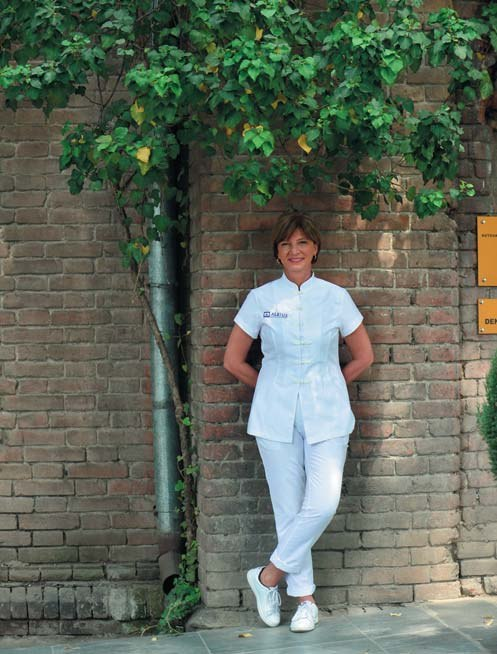
«ALBIUS» – це мій дім, частина мого життя...
– Що зіграло найважливішу роль у Вашому професійному становленні, в тому, що Ви не відбували день до вечора, а працювали, діяли креативно, цілеспрямовано?
– Стоматологія – моя професія, яку я люблю і не можу собі уявити життя без неї. Ця професія вимагає багато енергії і праці – клінічної, науково-педагогічної роботи.
Думаю, мені дуже пощастило, тому що в моєму житті завжди були люди, грузинські або іноземні колеги, від яких я могла отримати знання і досвід.
Я ніколи не говорю про те, наскільки успішна. Приємніше чути ці слова від інших. Якщо ви справді любите свою роботу, тоді ви завжди будете щасливі. Чим вище поставлена мета на шляху професійного розвитку, тим серйозніші перешкоди доводиться долати. Шлях до успіху був досить складним, але я завжди знала, що коли я хотіла чогось, то могла досягти цього – у будь-який момент, у будь-якому місці, я могла розпочати нове життя в будь-якому випадку, головне – бажання і працьовитість. Особисті якості, які допомогли мені у професійному розвитку, – це постійне прагнення до саморозвитку та особистого просування, старанність, впевненість у собі і тверда переконаність у тому, що існують необмежені можливості для самоствердження.
– Тематика Ваших підручників для студентів, резидентів і лікарів приголомшує, відображаючи неймовірну широту Ваших професійних інтересів: тут і терапевтична стоматологія, і ендодонтія, і пародонтологія, посібники для асистентів, гігієністів, принципи радіографії та радіаційна безпека у стоматології... Нова грань мультидисциплінарного підходу – коли стоматолог сам стає втіленням команди фахівців?
– Кожен підручник має свою історію. Підручник «Ендодонтія для дітей і дорослих», виданий нещодавно, має вже четверте видання. Вважаю, що цей напрям терапевтичної стоматології у Грузії є одним з найбільш розвинених, сучасні інновації швидко впроваджуються. Отже, існує безперервність попиту на новинки, що призводить до необхідності випуску нових видань. Однак нова класифікація карієсу ще не реалізована. Асоціація грузинських стоматологів переклала і адаптувала довідник Всесвітньої федерації стоматологів (FDI), який був презентований кілька років тому цією організацією і пропонує абсолютно нову концепцію управління карієсом. Нові підходи були впроваджені в ряді шкіл резидентури, хоча для впровадження в університетах ще належить зробити багато, а для цього бажання провідних медичних університетів є одним з ключових факторів.
Що ж до підручників для асистента стоматолога і гігієніста ротової порожнини, це було частиною більшого проекту. Національний центр підвищення якості освіти в Грузії активно працює над просуванням професійної освіти на основі стандартів ЄС. За два роки роботи створені спеціальності Асистента Стоматолога і Гігієніста Ротової Порожнини. Спеціальність Зубний Технік була також оновлена і поліпшена. Були створені відповідні навчальні програми та підручники. Професійні навчальні заклади вже почали прийом студентів. Вважаю, що професійна освіта є одним з найважливіших компонентів розвитку країни.
Щодо пародонтології, то це сфера, яка найбільше перебуває під впливом застарілих концепцій. Донині використовуються радянські підходи і класифікації. Тому, коли в 2014 році ми вирішили оновити цю сферу, то почали співпрацю з провідними світовими школами пародонтології, підписали меморандум з професорами Римського університету Сапієнца, створили сучасну навчальну програму і перший підручник за рекомендаціями професорів Римського університету Сапієнца – ґрунтуючись на міжнародній класифікації, сучасних методах діагностики і лікування. Я рада, що Міжнародна Школа Пародонтології створена в нашому центрі, підручник користується попитом і став пріоритетним для наших колег, і сьогодні багато пародонтологів працюють сучасними методами.
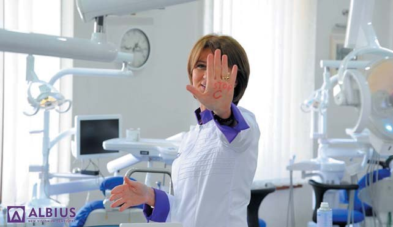
Я пишаюся тим, що є активним учасником програми елімінації гепатиту С в Грузії. Вірю в те, що ми зможемо зробити Грузію першою країною у світі без гепатиту С.
Крім того, Асоціація грузинських стоматологів часто просить консультації з питань управління. Нині стоматологія в Грузії є частково регульованою діяльністю з мінімальними/базовими стандартами, розробленими державою. А при швидкому розвитку галузі прагнення клініки до якості і послуг обганяє вимоги державного регулювання. Ось чому ми почали працювати над підручником «Управління стоматологічними клініками».
Торік країна прийняла нові технічні регламенти з радіаційної безпеки, і створився інформаційний вакуум у відповідь на нові вимоги. Тому у співпраці з міністерством ми вирішили розробити ефективний підручник і нові освітні програми. Підручник «Принципи радіографії та радіаційна безпека у стоматології» був написаний, враховуючи ці обставини. Асоціація вже почала навчальні курси, і багато університетів інтегрували цей підручник у свою навчальну програму. Нині для публікації підготовлено три нових посібники. Кожен із них ґрунтується на принципах ефективної роботи стоматологічної команди. Я рада, що можу пишатися тим, що мультидисциплінарний підхід до лікування в Грузії реалізується у багатьох стоматологічних клініках. Наш внесок у це полягає в тому, що згадані програми і посібники допомагають враховувати ці принципи.
– Розкажіть про Ваш Стоматологічний центр «Альбіус». Що особливого чекає на пацієнта, який вирішив саме його фахівцям довірити відновлення свого стоматологічного здоров'я?
– Стоматологічний центр «Альбіус» був заснований на моєму багаторічному медичному, науковому, освітньому і управлінському досвіді. Високий рівень розвитку недавно створеного багатофункціонального центру, міжнародне визнання і успіх були досягнуті завдяки тісним діловим відносинам з міжнародними та національними професійними і громадськими інституціями, а також завдяки високотехнологічному обладнанню центру, висококваліфікованим і досвідченим співробітникам разом з вдало підібраною талановитою молодою командою.
У центрі реалізуються клінічна, постдипломна освіта і безперервні програми стоматологічної освіти. Кожен стоматолог бере участь у програмах безперервної освіти в Європі та Америці, що безумовно веде до індивідуального підходу до пацієнтів, надання високоякісних, ексклюзивних послуг.
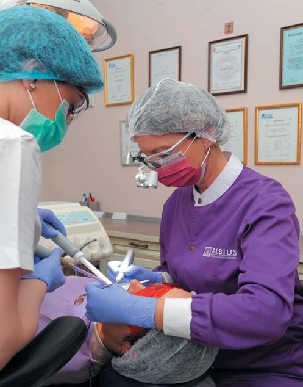
Я відчуваю себе комфортно тоді, коли залишаюся з пацієнтом сам на сам. У цей час я не думаю про інші справи і громадську активність.
Сьогодні пацієнти все частіше вимагають естетичної реабілітації всієї зубо-щелепної системи, що передбачає широкомасштабне втручання в структури ротової порожнини для поліпшення білої і рожевої естетики. У відповідь на такі запити ми протягом кількох років значно змінили діагностику, методи, а також загальний підхід до процесу лікування. До лікування стало необхідним залучати фахівців різного профілю, а бажаний естетичний і функціональний результат – тільки результат добре скоординованої роботи. Наш центр «Альбіус», який об'єднує понад 80 співробітників, вирізняється таким комплексним лікуванням, або міждисциплінарним підходом. Ми відкрили філію два місяці тому.
На додаток до стоматологічної клініки в Центрі функціонує навчальна академія, на базі якої ведеться безперервна освіта молодих лікарів-стоматологів, резидентів, також обмін знаннями та контроль якості. Академія має інший підхід до викладання і, беручи до уваги результати, прагне до досягнення вищих стандартів у відповідних клінічних компетенціях в галузі освіти. Безперервна стоматологічна освіта можлива як у теоретичному, так і в практичному напрямку. З цією метою Центр має навчальний ресурсцентр, оснащений за європейськими і американськими стандартами, де щомісяця провадяться різні заняття, тренінги, лекції, вебінари та семінари.
У Центрі створено Міжнародну Школу Пародонтології, Школу управління стоматологічними клініками, а з 2019 року почне працювати Міжнародна Школа Ендодонтії.
Міжнародна Школа Пародонтології створена в «Альбіусі» 2015 року. Метою заснування було впровадження сучасної пародонтології та навчання сучасним методам діагностики і лікування. До процесу навчання підключилися всесвітньо визнані фахівці. Багато з них відвідали Грузію і провели майстер-класи і прямі операції, лікарі нашої школи також двічі відвідували Італію, де пройшли практичні курси з хірургічної та нехірургічної пародонтології. Після трьох років роботи в школі було створено клуб періошколи «Альбіус» для випускників школи. Створення клубу зумовлене потребою постійного професійного зростання у сфері пародонтології. Сьогодні клуб об'єднує 50 пародонтологів, які володіють сучасними знаннями і практичними навичками, потрібними для ефективного лікування пацієнтів з хворобою ясен.
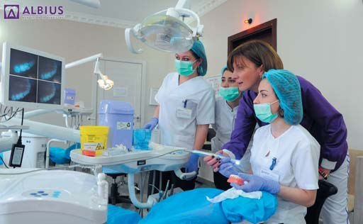
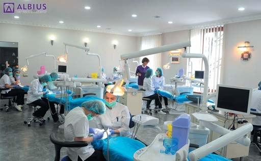
Виявлення бренду року вважається престижним змаганням у всіх країнах. У Грузії масштабна церемонія нагородження національних брендів була вперше проведена у 2005 році. «День грузинського бренду» – це моніторинг, який щорічно на піар-ринках, маркетингових дослідженнях, соціальних опитуваннях визначає відомі і популярні бренди по всій країні, і вони отримують відповідну нагороду. Одним з лауреатів 2015 року був «Успішний новий грузинський бренд «Стоматологічний центр «Альбіус».
В «Альбіусі» працює багато молодих людей, вони спочатку були моїми студентами, потім резидентами, а тепер – професійні лікарі. Я пишаюся цими молодими людьми, і для мене дуже важливо, щоб вони були успішними як у клінічній діяльності, так і в особистому житті. Найбільше в них я ціную впевненість у собі. Мені особисто важко знайти спільну мову з людьми, у яких немає своїх ідей, люблю, коли молоді люди опонують і вільно наводять аргументи.
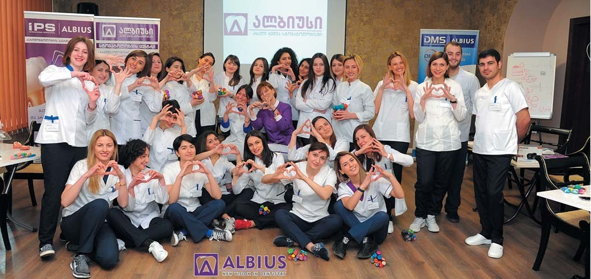
Команда «Альбіуса» використовує весь ресурс для розвитку резидентів. Кожен з них – наше обличчя і ім'я. Ми пишаємося нашими резидентами.
«Альбіус» – це передусім дружна сім'я. Це дуже важливо, щоб співробітник з радістю приходив на роботу. Я вважаю, що головне – мати здорові стосунки і приймати думку інших, тому що інакше керувати буде просто неможливо. Для мене дуже важливим є створення дружнього середовища в нашому Центрі, де всі співробітники відчувають себе вільними, тому що неможливо досягти успіху там, де люди не можуть вільно висловлювати свою думку.
До кінця дня ми всі втомлюємося, але намагаємося не показувати цього один одному, і в цей час найкращі ліки – ті ж стосунки одне з одним.
Ось чому я люблю понеділок, що неприйнятне для багатьох, але діловий тиждень починається в понеділок уранці. «Альбіус» – мій дім, частина мого життя, і я не тільки люблю його, мені це також подобається тому, що це цікаво і сповнено перспективами.
– Ви стажувалися в університетах багатьох європейських країн – Франції, Німеччини, Італії, Великої Британії... Який досвід винесли зі знайомства з організацією стоматологічної допомоги в цих країнах?
– Багато європейських університетів звертають особливу увагу на роль доказової медицини (Evidence-based medicine) і надання науково обґрунтованих питань лікарям-практикам. Практично у всіх розвинених країнах методологія лікування протягом багатьох років ґрунтувалася на сучасних керівних принципах, останніх класифікаціях нозології, і це завжди дуже допомагає всім стоматологам у цих країнах.
Після стажування в різних університетах я постійно намагалася впроваджувати сучасні аспекти в нашій сфері. Я рада, що всі нові можливості в нашому стоматологічному співтоваристві доступні як у клінічних, так і в теоретичних аспектах, і, на щастя, вже є рекомендації щодо основних напрямів стоматології.
За кордоном університетські клініки надають великої ваги створенню адаптивного середовища. А дослідження, проведені в Грузії у 2012-2013 роках, засвідчили, що люди з обмеженими можливостями у нас часто залишаються без стоматологічних послуг. Згідно з рекомендаціями дослідження, Асоціація грузинських стоматологів розробила навчальний модуль та керівні принципи. Ми стали виконувати базові рекомендації в Центрі «Альбіус». Наш Центр повністю адаптований до потреб людей з різними порушеннями розвитку. Крім того, в резидентську програму додані відповідні модулі, і найприємніше полягає в тому, що різні університети вже впровадили навчальні програми зі спеціальної стоматології.
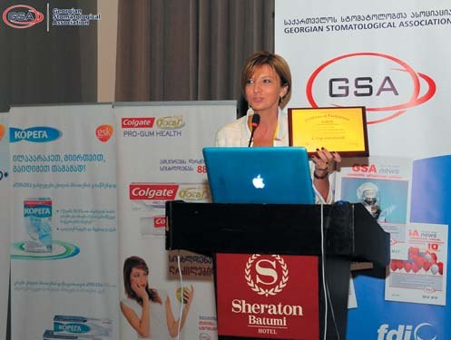
Мета мого життя була, є і буде в підтримці молодого покоління. Це світлина з однієї із церемоній нагородження молодіжної організації «Radix».
– Над чим нині працюєте як клініцист, учений і викладач?
– Я керую кафедрою терапевтичної стоматології у Тбіліському державному університеті ім. Іване Джавахішвілі. Мій безпосередній обов'язок – надати нові технології та інноваційні методи лікування, в тому числі підручники, що містять новітню інформацію для студентів і співробітників кафедри. З упевненістю можна сказати, що пародонтологія як напрямок ніколи не була такою актуальною і важливою в Грузії, як сьогодні. Останніми роками вдосконалення науково-дослідних та діагностичних методів і технологічний розвиток природним чином змінили погляд на пародонтологічне лікування і підходи до нього у всьому світі, збільшуючи його важливість у комплексному лікуванні.
За останні п'ять років ми відмовилися від класифікації діагностики та лікування захворювань пародонту, схваленої на XVI з'їзді радянських стоматологів у 1983 році. Уже 5 років, як наш Центр «Альбіус» веде навчання та лікування пацієнтів за класифікацією, схваленою Американською академією пародонтологів. Остання відрізняє підхід нашого Центру від інших навчальних закладів і клінік – це міжнародна класифікація, якою користувалися провідні університети і клінічні установи світу до 2018 року.
21 червня 2018 року на конгресі Європейської пародонтологічної федерації (EuroPerio 9) в Амстердамі було прийнято новітню класифікацію. Я особисто була присутня на цій презентації. Нова класифікація викликала особливий інтерес фахівців, вона має бути негайно впроваджена у клінічній практиці та освітніх програмах. Під час конгресу було проведено багато ділових зустрічей з нашими зарубіжними партнерами, разом з ними розробляли цікаві проекти, які сприятимуть подальшому розвитку пародонтології у Грузії.
Як ви знаєте, міжнародний освітній стандарт, за винятком єдиних освітніх програм, має на увазі створення підручників, які відповідають цим програмам. Основні напрямки розвитку кожної конкретної галузі відображені у відповідних типах підручників. Ось чому нові класифікації, схвалені на EuroPerio 9, спонукали нас працювати над абсолютно новим посібником «Базова та клінічна пародонтологія, хірургічні та нехірургічні методи лікування», і я впевнена, що він невдовзі стане настільною книгою для студентів, резидентів і всіх наших колег.
На додаток до цього, веду цікаві дослідження разом з моїми докторантами, наприклад, працюємо над лікуванням оральних запальних захворювань за допомогою мезенхімічних стовбурових клітин кісткового мозку, впливом пероральних контрацептивів на стан ротової порожнини жінок і статистичним аналізом стоматологічних послуг у період гормональних змін, відновленням ясенної рецесії за допомогою децелюляризованої мембрани, похідного з людських амніонів, роллю вірусу людської папіломи в розвитку плоскоклітинної карциноми ротової порожнини, також над роллю трансплантації мезенхімічних стовбурових клітин у патогенезі епітеліального раку слизової оболонки ротової порожнини.
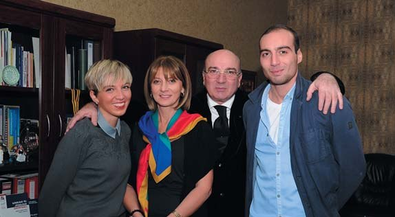
Моя сім'я і її підтримка – найдорожче у моєму житті.
– Як президент Асоціації грузинських стоматологів, розкажіть про найважливіше в діяльності цієї організації.
– Асоціація грузинських стоматологів – член Всесвітньої федерації стоматологів (FDI), а також дійсний член Європейської регіональної організації (ERO) Всесвітньої федерації стоматологів. В Асоціації функціонують організаційні, експертні комітети, комітети з питань науки і освіти, з питань міжнародних відносин, регіональних відносин.
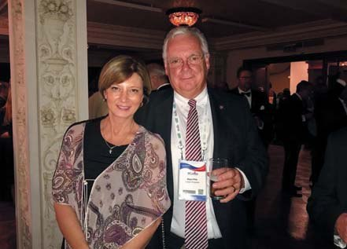
З професором Найджелом Піттсом, директором Центру Innovation & Translation (DITC) в King's College Лондонського стоматологічного інституту.
Сьогодні Асоціація об'єднує понад 4000 членів по всій Грузії і має 7 регіональних організацій, що базуються в Тбілісі, Кахеті, Квемо Картлі, Самцхе-Джавахеті, Імереті, Самегрело та Аджарії. Асоціація видає стоматологічний журнал «GSAnews».
За останні роки Асоціація грузинських стоматологів здійснила безліч важливих нововведень. Після вступу в силу програми елімінації гепатиту С в Грузії запланували і провели ряд ініціатив. У 2015 році Асоціація створила підручник «Контроль інфекційних захворювань у стоматології» (відповідний національний орієнтир у 2016 році), на основі якого за підтримки Національного центру з контролю за захворюваннями і громадським здоров'ям було створено навчальний курс для осіб, відповідальних за контроль над інфекціями. Програма була акредитована Радою з професійного розвитку Міністерства праці, охорони здоров'я і соціальних справ Грузії.
На сьогодні 4372 лікарі-стоматологи, медсестри і особи, що відповідають за процес дезактивації, пройшли підготовку за цією програмою. Це насправді один з найбільших проектів у галузі охорони здоров'я, і я пишаюся тим, що наш внесок у цю програму не такий уже й малий.
Крім того, ми, як ніхто, бачимо гарний бік цієї програми: люди, у яких не було ніякої надії на життя, приходять у клініку, щоб повернути гарну усмішку.
Асоціація грузинських стоматологів в рамках навчальної програми, акредитованої Міністерством навколишнього середовища та природних ресурсів Грузії, Агентством з ядерної та радіаційної безпеки, веде перепідготовку представників стоматологічних клінік.
Ще одна важлива тема, яку ми представимо суспільству, – це програми професійної освіти. Розвиток системи професійної освіти є одним із пріоритетів для Міністерства освіти і науки Грузії. З цією метою, із залученням зацікавлених сторін, міністерство розробило новий законопроект, який відкриває шлях для впровадження сучасних підходів у системі професійної освіти. Ґрунтуючись на західному досвіді, Асоціація грузинських стоматологів розробила програму для трьох найбільш затребуваних професій і подала Міністерству освіти програми для зубного техніка, асистента стоматолога та гігієніста ротової порожнини. Я вважаю, що програми професійної освіти, створені на базі Асоціації, значно просунуть уперед цю сферу і скоротять безробіття.
На цьому етапі Асоціація грузинських стоматологів спільно з Міністерством охорони здоров'я працює над удосконаленням кваліфікаційних та сертифікаційних тестів і підготовкою нових тестів.
Ще один великий проект буде реалізований у 2019 році – у Грузії відбудеться Всесвітній форум жінок, організатором якого є Асоціація грузинських стоматологів, за підтримки Міжнародної жіночої організації Всесвітньої федерації стоматологів.
– Ви членкиня різних професійних і громадських міжнародних організацій, від Всесвітньої федерації стоматологів – до благодійної організації «International Association of Lions Club»... Чим Ви найбільше пишаєтеся з Вашої громадської діяльності?
– Членство в різних міжнародних професійних та громадських організаціях – велика честь для мене, і я завжди намагаюся внести свій скромний вклад як одна з представниць грузинських стоматологів. Для мене особливо важливо бути делегатом Всесвітньої федерації стоматологів (FDI). Ця організація є головним представницьким органом понад мільйона стоматологів у всьому світі, який розробляє політику в галузі охорони здоров'я та післядипломні освітні проекти, представляє єдину позицію міжнародного адвокатування стоматологів і підтримує асоційованих членів у заохочувальній діяльності зі зміцнення глобального здоров'я ротової порожнини. Всесвітня федерація стоматологів щороку проводить Генеральну асамблею Федерації. Щороку, будучи делегатом, я беру участь у Генеральній асамблеї для розробки доказів, дуже важливих для нас, лікарів-стоматологів, як у клінічному, так і в освітньому плані. У цій організації функціонує Європейська регіональна організація і Всесвітня організація жінок. Місія Всесвітньої організації жінок (WDW) полягає в координації національних груп, зборі інформації про роботу жінок-стоматологів, сприянні контактам між жінками у світі і їх участі у професійній діяльності, зацікавленості в стані здоров'я жінок і важливості ролі стоматолога у збереженні здоров'я. Вісім представників з різних країн працюють у виконавчій раді цієї організації, і я дуже пишаюся тим, що серед них я представляю Грузію, поряд з іншими членами зі Сполучених Штатів, Італії, Хорватії, Японії, Кореї, Німеччини, Єгипту.
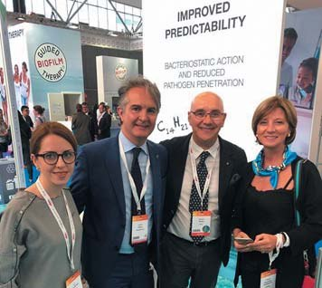
Тея Нацвлішвілі, Андреа Піллоні і Роберто Россі – це ті люди, які заклали фундамент періошколи «Альбіуса» і нової хвилі розвитку пародонтології у Грузії.
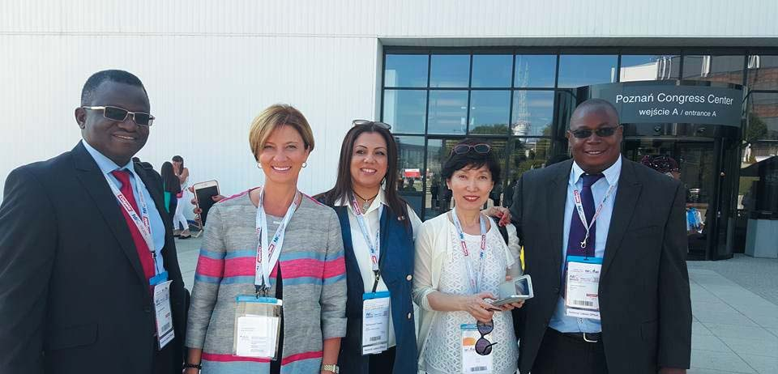
На конгресі Всесвітньої федерації стоматологів (FDI) у Познані, Польща.
– Як Вам вдається, маючи стільки обов'язків, правильно розподілити час, щоб у морі термінових справ не забути про свою головну місію – про те, що Стівен Р. Кові, письменник і мотиваційний спікер, вклав у формулу тайм-менеджменту четвертого покоління: «Жити, любити, вчитися, залишити слід»? І що, окрім улюбленої професії, дарує Вам щастя, світло, радість?
– Щоб зберегти темпи життя в цьому мінливому світі, слід правильно розподілити час. Я почала контролювати час із самого раннього віку – планувала свою кар'єру у відповідності зі способом життя та інтересами, а потім починала реалізацію крок за кроком.
Люди часто скаржаться, що вони не можуть своєчасно завершити роботу, немає часу не тільки для друзів і членів сім'ї, але навіть для себе. Я належу до тієї категорії людей, які намагаються бути успішними в усьому. Для правильного розподілу часу важливо встановити пріоритети. Щодня у мене багато справ, і я розставляю їх у відповідності з пріоритетами.
Крім моєї улюбленої професії, у мене також є хобі – дуже люблю подорожувати, танцювати і співати, верхову їзду, що є джерелом позитивних емоцій. Часто гарна музика змушує танцювати навіть на вулиці. Я збираю ляльки, які носять найкрасивіші сукні різних кольорів. Колекція ляльок виставлена в особливому місці в адміністративній кімнаті в «Альбіусі». Ці ляльки є частиною мого життя, я їх привозила з різних країн під час подорожей. Коли у мене багато роботи і я втомлююся, то відкриваю лялькову шафу, торкаюся до них і починаю подорожувати країнами, з яких їх привезла.
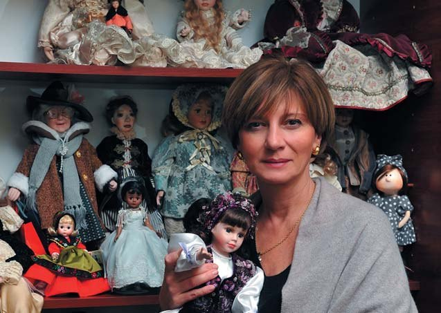
Коли у мене багато роботи і я втомлююся, то відкриваю шафу з ляльками, торкаюся до них і починаю подорожувати країнами, з яких їх привезла.
– Ваші побажання колегам, які будуть читати це інтерв'ю.
– Передусім хотіла б побажати моїм колегам успіхів. Розвивайте особисті якості, які допоможуть досягти успіху. Віра у важливість своєї справи, висока продуктивність, ентузіазм, упевненість у своїх здібностях, оптимізм, постійне прагнення до розвитку, внутрішня свобода, мотивація і прагнення людини до успішної діяльності дають реальні результати.
Є ще одна важлива життєва рекомендація: гідне подолання невдач. Навіть якщо доля не завжди дружить з вами, не відмовляйтеся знову спробувати свої сили. Не бійтеся невдач – навпаки, це розширює ваш досвід.
Я хотіла б сказати моїм колегам, що потрібно працювати над собою і піклуватися про саморозвиток для досягнення успіхів. У сучасному стоматологічному світі існує дуже велика конкуренція, але в той же час є величезні можливості, і слід використовувати більшість цих можливостей. Також моя порада – бути відкритим для інновацій.
Нарешті, любіть своїх пацієнтів і колег беззастережно і приймайте цікаві виклики – за допомогою наполегливої праці і цілеспрямованості всі висоти досяжні.
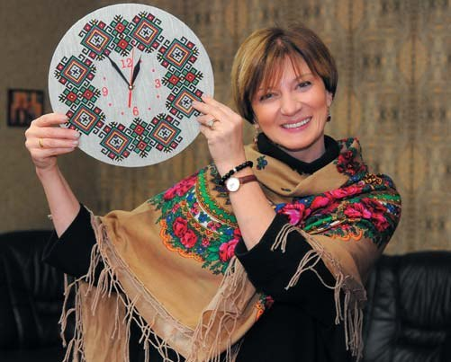
Багато приємних і, на жаль, тяжких моментів єднають Грузію з Україною. Для нас дуже цінні дружба, колегіальність і співробітництво українського і грузинського народів.
– Дякуємо за інтерв'ю!
Розмовляла Ганна Антипович. Фото з архіву Кетеван Гогілашвілі.